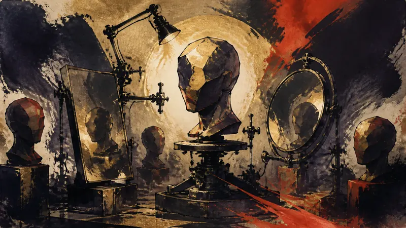

大厂

Nintendo Switch 2 版《007 First Light》再次延期（译）
来源：AUTOMATON
H2 INTERACTIVE 宣布《007 First Light》Nintendo Switch 2 版再次推迟发售，这是该版本第三次延期。
观点：延期的代价落在玩家身上，尤其是已经按照原定时间安排日程或购买主机的人。
先鸦｜黎明快讯
玩家能动性：政策如何限制它、产业如何塑造它、叙事设计如何实现它。
最新消息
前线
大厂
来源：AUTOMATON
H2 INTERACTIVE 宣布《007 First Light》Nintendo Switch 2 版再次推迟发售，这是该版本第三次延期。
观点：延期的代价落在玩家身上，尤其是已经按照原定时间安排日程或购买主机的人。
大厂

来源：IGN
《Pokémon：Wild Card》电影宣布将于 2027 年上映。
观点：这则消息增加的是玩家未来可以选择接触的娱乐形式，目前尚未要求玩家购买、游玩或投入时间。
大厂

来源：Kotaku [controversial]
Square Enix 以《SaGa》系列参与佐贺地区的观光企划，将游戏 IP 与地方旅游活动连接起来。
观点：游戏 IP 进入现实地点后，玩家多了一条把虚构兴趣延伸到旅行的路径，但消费场景也可能替体验安排节奏。
大厂

来源：PC Gamer
PC Gamer 整理 Steam 截至 8 月 30 日一周的数据，列出平台上最受欢迎的十大游戏类型。
观点：类型排行很容易成为玩家缩短选择过程的捷径，但热门度反映的是别人在玩什么，不是你今晚想玩什么。
前线
业界

来源：4Gamer.net
HAELE3D 预计于 9 月 23 日推出《HAELE 3D - Portrait Studio Pro》，让创作者以 3D 方式调整脸部、发型、表情、光线与背景，作为人物绘画参考。
观点：这类工具把部分观察与构图工作交给可调整的模型，可能扩展创作者的表达能力，也可能让预设姿势与审美悄悄成为起点。